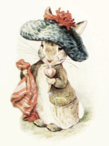
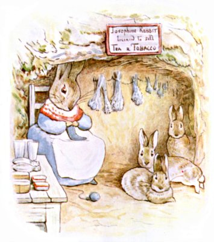
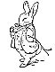
ばにばにパパさんから ソーリーじゅうの こどもたちへ
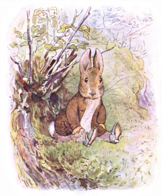
あるひの あさ １ぴきの こうさぎが、 こみちのわきの どてに すわっておりました。
みみを たてて こうまの パカラン パカランという あしおとを きいていたのです。
みちを すすむのは １だいの ばしゃで、 うんてんしゅは マグレガーおじさん、 わきには よそいきの ぼうしを かぶった マグレガーおばさんも いました。
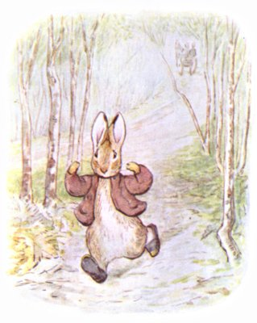
ばしゃが いってしまうと、 ばにばにベンジャミンくんは すぐさま みちへと すべりおりて、 かけだしました ―― ひょい、 ぴょんぴょん、 びょおうん ―― マグレガーさんの おにわの うらの もりに すむ しんせきの おうちを たずねるのです。
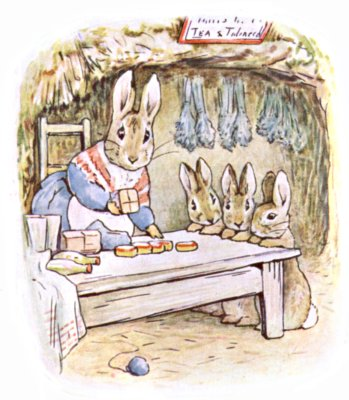
そのもりには うさぎあなが いたるところに あって、 そのなかでも いちばん きちんとしていて ふかふかなのが ベンジャミンの おばと そのいとこたち ―― フロプシー モプシー カトンテル ピーター ―― の おうちなのです。
あなうさパパは もう いないので、 あなうさママが うさぎの けいとで てぶくろや リストバンドを あんで、 くらしを たてていました。 （わたしも このまえ バザーで かったんですよ。） そのほか ハーブや ローズマリーの おちゃ、 あなうさタバコ （いわゆる ラベンダー） なんてものも うっています。
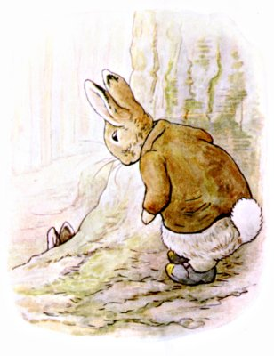
ベンジャミンくんは あまり おばさんとは あいたくなくて。
そこで モミのきの うらに まわったのですが、 あやうく いとこの ピーターの まうえへ ころげおちそうに なりました。
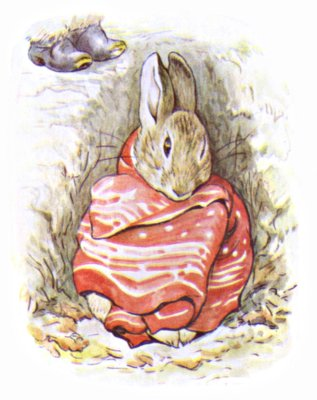
ピーターが ひとりで からだを まるめていたのです。 どうも げんきが なさそうで、 あかい わたげの ハンカチに くるまっていました。
「ピーター。」と ベンジャミンくんの ひそひそごえ。 「おまえ、 ふく、 だれに とられたんだよ？」
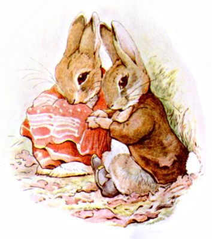
ピーターの へんじは 「マグレガーおじさんの にわの かかしさ。」 それから にわで おいかけまわされたこと、 くつと ふくを なくしたことを せつめいしました。
ベンジャミンくんは いとこの わきに こしを おろして ちからづよく かたります。 マグレガーおじさんが ばしゃで でかけたこと、 おばさんも いっしょだということ、 しかも よそいきの ぼうしだったから １にちじゅう でかけっぱなしだと いうことを。
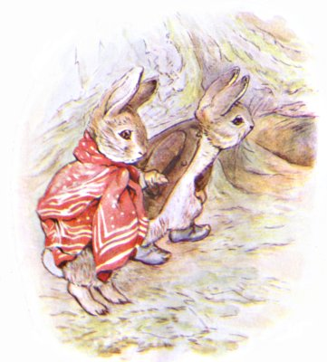
ピーターは、 あめでも ふればいい、 といいました。
と そのとき、 あなうさママの こえが うさぎあなの なかから きこえてきます。 「カトンテル！ カトンテル！ ちょっと カモミールを とってきて！」
ピーターは、 さんぽに いけば たぶん きぶんも よくなる、 といいました。
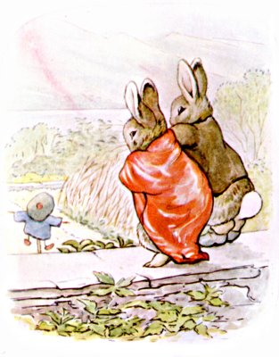
ふたりは てを つないで どんどん あるき、 もりはずれの いしがきの うえ、 ひらたいところに のぼりました。 そこから マグレガーおじさんの にわが みおろせるのです。 ピーターの うわぎと くつが かかしのところに あるのが はっきりと わかって、 あたまには マグレガーおじさんの おふるの ベレーぼう。
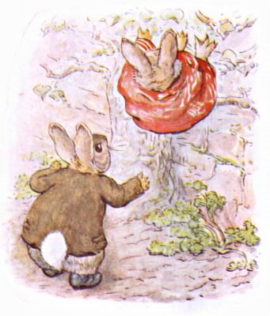
ベンジャミンくんが いいます。 「さくの したを くぐりぬけたら なんだって ふくが だめになる。 ナシのきを つたって おりれば うまく しのびこめるんだ。」
ピーターが あたまから おっこちましたが ことなきを えました。 したの なえどこが たがやされたばかりで ふかふかだったのです。
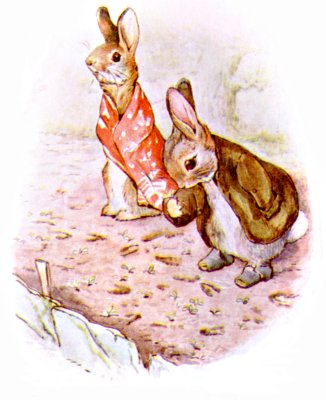
そこに まかれていたのは レタスの たねでした。
ふたりは なえどこの あちこちに ちいさく あやしげな あしあとを たくさん つけます。 きぐつを はいた ベンジャミンくんは とくにもう。
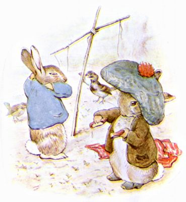
ベンジャミンくんの はなしでは、 まず やるべきことは ピーターの ふくを とりもどすこと、 そうすれば ハンカチも つかえるように なるとか。
というわけで かかしは はだかに されました。 よるのあいだに あめが ふったので、 くつには みずが はいっていて、 うわぎも ちょっぴり ちぢんでいました。
ベンジャミンは ベレーぼうも かぶってみましたが かなり ぶかぶかです。
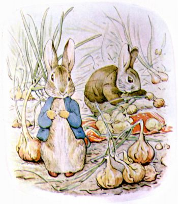
そのあと タマネギを ハンカチで つつんで おばさんへの ささやかな おみやげに しようと いいだしました。
ピーターは たのしくなさそうでした。 みみが がんがん しっぱなしなのです。
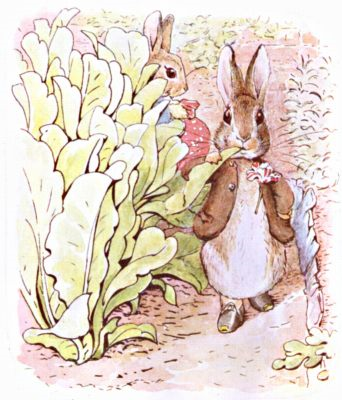
それに ひきかえ ベンジャミンは まったく わがものがおで、 レタスの はっぱを かじります。 なんでも いつも おとうさんと いっしょに このにわに やってきては レタスを とって にちようびの ごちそうに するのだとか。
（ちなみに ベンジャミンくんの おとうさんの なまえは ばにばにパパさんと いいます。）
もちろん いいできの レタスをです。
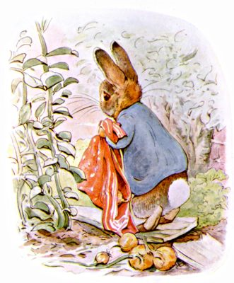
ピーターは なににも くちを つけず、 おうちに かえりたいと いいだしました。 とたんに タマネギを はんぶん おっことします。
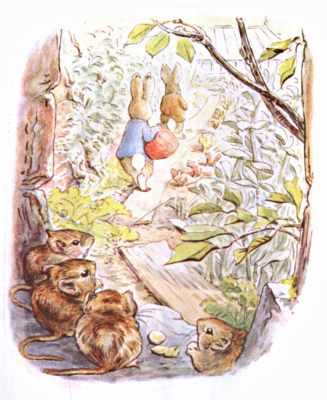
ベンジャミンくんは、 やさいを せおったままじゃ ナシのきは のぼれないな、 といいました。 さきに たって ずかずかと にわの はんたいがわへと あるいていきます。 ふたりが とおったのは あかるい いろの れんがべいの した、 いたを わたした こみちでした。
ねずみたちが とぐちだんのところで サクランボの たねを わっていたのですが、 あなうさピーターと ばにばにベンジャミンくんが とおりすぎたので めを ぱちくりさせました。
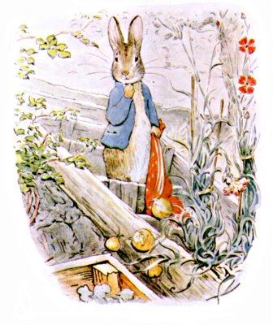
そのうち ピーターは またしても ハンカチから てを はなしてしまいます。
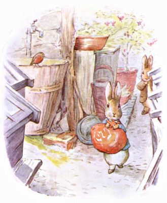
ふたりは うえきばちと なえばこと ひらばちの ならんだところへ やってきました。 ピーターの みみなりは ますます ひどくなって、 めなんか あめだまみたいに はれあがって！
いとこの すうほまえを あるいていたのですが、 いきなり たちどまってしまいます。
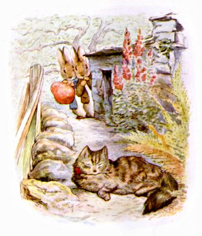
かどを まわったところ こうさぎたちの めのまえに こいつが いたのです！
ベンジャミンくんは ひとめみた とたん、 すかさず ピーターを タマネギごと ひっぱって、 じぶんも いっしょに かごの したへと かくれて ……
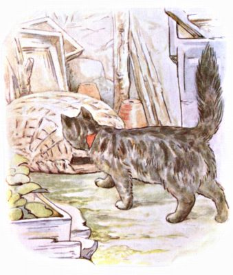
ねこの おじょうさんは おきあがると のびをして、 こっちへきて かごを くんくんと かぎました。
もしや タマネギの においが だいすきだとか！
それは さておき かごのうえに のっかってしまって。
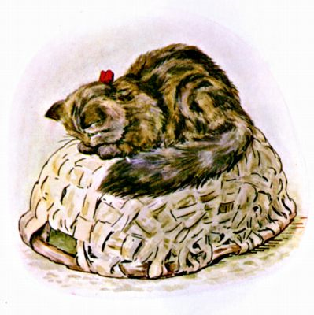
５じかんも ずっと そのまま。
＊ ＊ ＊ ＊
わたしには かごのしたの ピーターと ベンジャミンを みなさんに かいてあげることが できません。 まず まっくらですし、 タマネギの においが ひどくて あなうさピーターと ベンジャミンくんは なみだまみれでしたから。おひさまが もりの むこうに ぐるっと まわって、 おひるも だいぶ すぎましたが、 まだ ねこは かごのうえに すわっていて。
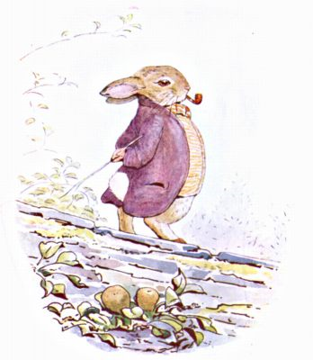
はたして そこへ、 ぴたぱた ぴたぱた、 モルタルの かけらが へいのうえから おちてきます。
ねこが みあげると、 なんと ばにばにパパさんが たかい いしがきのうえを ゆうゆうと あるいているのです。
あなうさタバコの パイプを ふかして、 てには こぶりの むち。
じぶんの むすこを さがしているのでした。
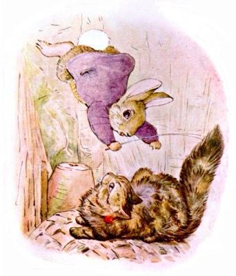
ばにばにパパさんは ねこというものを よくおもってはいません。
いしがきのうえから ねこの あたまを めがけて ちからいっぱい とびかかり、 ひっぱたいて かごから どかし、 さらに けを ひとつかみ むしって おんしつへと けりいれてしまいました。
ねこは おどろきのあまり やりかえすことも できません。
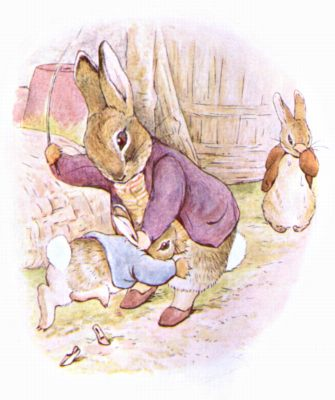
ばにばにパパさんは ねこを おんしつのなかへ とじこめました。
それから かごのところへ もどると むすこの ベンジャミンの みみを つかんで ひっぱりだし、 こぶりの むちで ぺしんぺしん。
そのあと おいの ピーターも ひっぱりだされて。
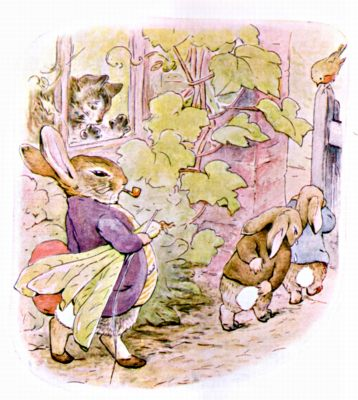
そうして タマネギの つつみを とりあげると、 にわの そとへと のしのし でていきました。
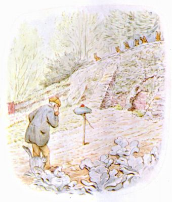
その３０ぷんほどあとに もどってきた マグレガーおじさんは、 あちらこちらの ようすが どうも みょうなことに きづきました。
だれかが にわじゅうを きぐつで あるきまわったみたいなのに ―― そのあしあとと きたら おかしなほどに ちいさくて！
それに なぜだか ねこが じぶんから おんしつのなかへ とじこもって、 かぎも そとから かけていたのです。
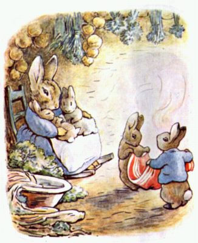
おうちへ かえった ピーターですが、 おかあさんは おこりませんでした。 むすこが じぶんで くつと うわぎを みつけてきたと わかって うれしかったのです。 カトンテルと ピーターは ハンカチを きちんと たたみ、 あなうさママは タマネギを しばって だいどころの てんじょうから つるしました。 ハーブの たばや あなうさタバコと おんなじところに。
（おしまい）